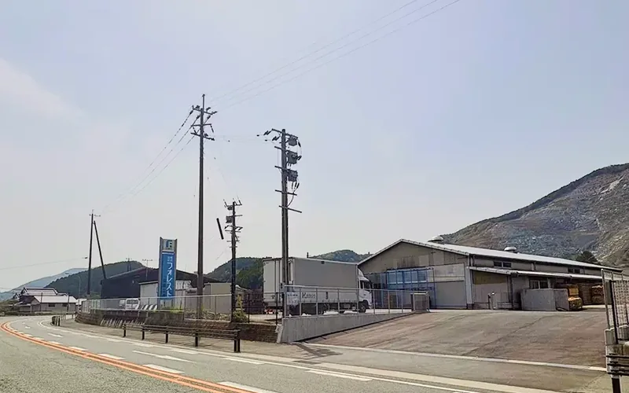
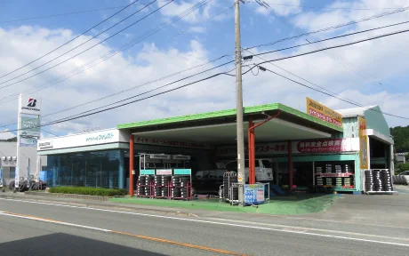
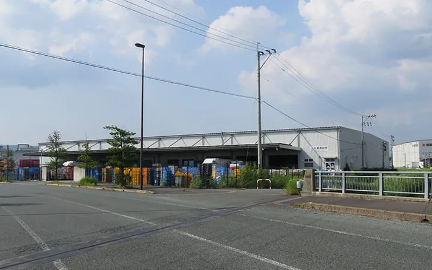
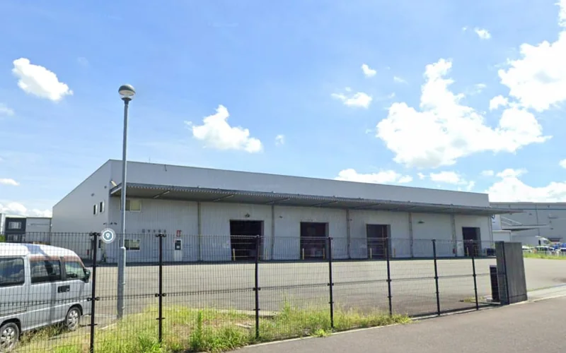
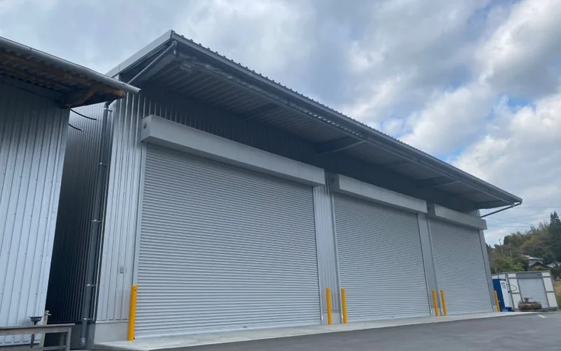
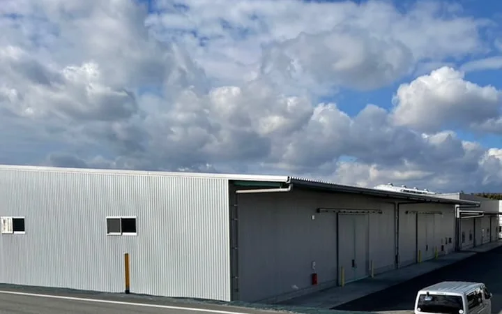
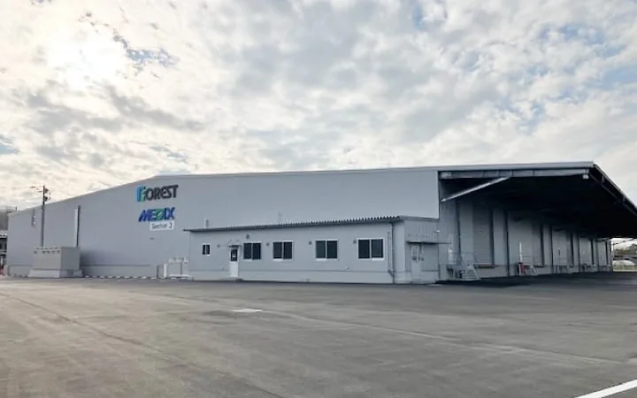
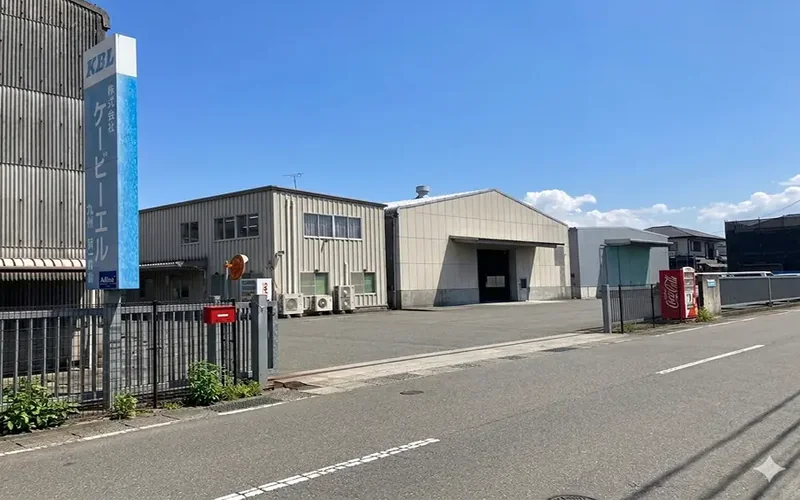

OFFICES & FACILITIES
事業所一覧
熊本・福岡・佐賀に、事業所・営業倉庫・賃貸ビル・ホテルの14拠点を構えています。
OFFICES
事業所4拠点


WAREHOUSES
営業倉庫8拠点







HOTEL
ホテル1施設

OFFICES & FACILITIES
熊本・福岡・佐賀に、事業所・営業倉庫・賃貸ビル・ホテルの14拠点を構えています。
OFFICES


WAREHOUSES






HOTEL